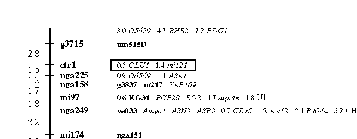
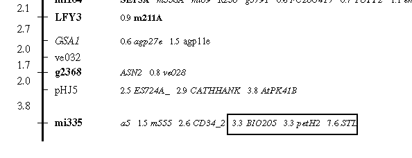

Figure 2 : Map distances on the new RI maps

2a. Distance displayed at the top of the map. Distances for markers displayed at the top of the map are always given relative to the nearest "framework" marker. In the example above, the marker O5629 is 3.0cM from g3715, PHB2 is 4.7cM from g3715 and PDC1 is 7.2cM from g3715 and is the top marker for this chromosome.
 2b. Distance displayed in the middle region of the map. Distances for markers in the middle of the map are given relative to the marker which is placed on the backbone of the map. For example the two markers GLU1 and mi121 are 0.3 and 1.4 cM from ctr1. In this example, mi121 is NOT 1.4cM from GLU1.
When a marker has been mapped to the same position as the marker on the backbone of the map then there is no figure given for that marker. In the figure above, um515D maps to the same position as g3715.
 2c. Distance displayed for markers at the bottom of the map. Markers displayed at the bottom of the map are shown relative to the bottom-most "framework" marker. In the figure above, BIO205 is 3.3cM from mi335, petH2 is 3.3cM from mi335 and STL is 7.6cM from mi335 and is thye bottom marker for the chromosome.

2d. Relative distances are always given from the nearest framework marker
In all the above cases, the markers are not printed in any order with respect to left-right position. It is quite likely that a marker at the end could actually map to the same position as the leftmost marker. It does NOT mean that this marker maps to the same position as the marker immediately to its left. For example, in the image above marker B34 is 2.2cM away from mi209. Marker ATHGENEA is 3.1cM from mi209. The markers nga128 and nga280 are 0.2cM away from mi209, and NOT 0.2cM away from mi303.